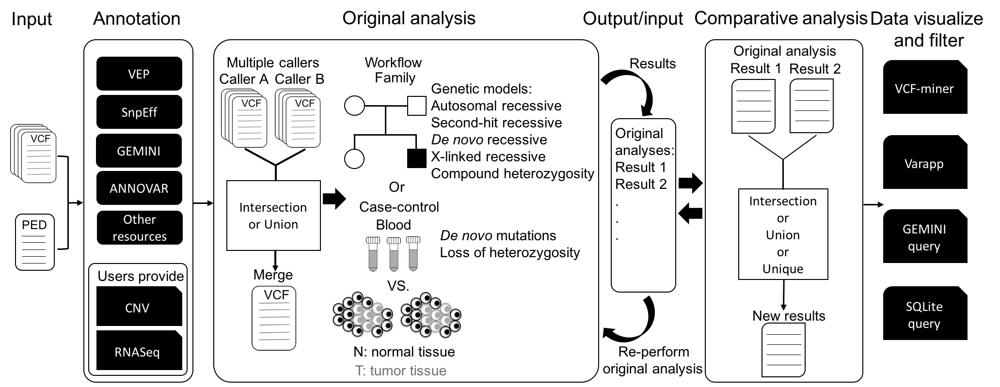

Before you start
The following tools are required for running VarSelect, please follow the instruction and install all the following tools for full benefits. Please note that the current version of VarSelect supports only the human genome reference hg19/GRCh37. The support for GRCh38 will be available shortly.
Gemini Gemini[1] is an analytic framework for human genetic variations by taking advantage of the SQLite database engine. It can be downloaded and installed by following the instruction at
https://gemini.readthedocs.io/en/latest/content/installation.html. Once installed, please follow the commands to download the data files of the additional annotations, such as the GERP[2] and CADD[3] scores at
https://gemini.readthedocs.io/en/latest/content/installation.html#updating-the-gemini-executables-and-annotations.
VEP VEP[4] is a comprehensive variants annotation tool, and is part of the Ensembl project. To install VEP, please follow the instruction at
http://www.ensembl.org/info/docs/tools/vep/script/vep_tutorial.html. Please note that the pre-built cache files are required for speeding up the annotation process. Please follow the instruction step by step at
http://www.ensembl.org/info/docs/tools/vep/script/vep_cache.html to download VEP of GRCh37 version.
VEP plugins VEP supports plugin modules to incorporate annotations from the external datasets. VarSelect requires the dbNSFP plugin, which are available at
https://github.com/Ensembl/VEP_plugins/blob/release/86/dbNSFP.pm, respectively.
dbNSFP dbNSFP[5, 6] annotates genome-wide non-synonymous single nucleotide variations (nsSNVs). The data file of dbNSFP is available at
https://sites.google.com/site/jpopgen/dbNSFP.
annovar ANNOVAR[7] is a variant annotation tool with high efficiency to a variety of annotation databases, and is available at
http://annovar.openbioinformatics.org/en/latest/user-guide/download/. Please note that a license is required. Please follow the instruction at
http://annovar.openbioinformatics.org/en/latest/user-guide/startup/ to install scripts into proper directories when all the required packages are downloaded. Databases will be automatically installed by the VarSelect installation script.
snpEff snpEff[8] annotates and predicts the impact of genetic variants, and is available at
http://snpeff.sourceforge.net/download.html. After downloading, please also download the pre-built snpEff annotation database. Please note that the current version of VarSelect is based on human genome reference hg19/GRCh37. Please download it with following command:
java –jar /path/to/your/snpEff.jar download –v GRCh37.75
vcftools
vcftools[9] is a set of tools for manipulating genetic variants in the VCF-formatted files, and is available at
https://vcftools.github.io/index.html. Please follow the instruction to install vcftools at
https://vcftools.github.io/examples.html.
bcftools, bgzip, tabix bcftools, bgzip and tabix are tools to compress, index and manipulate VCF files. bcftools is available at
http://www.htslib.org/download/, and includes the bgzip and the tabix tools in the software release.
Download VarSelect
The latest version of VarSelect is available a
t https://github.com/VarSelect/ .
Install VarSelect
Please make sure that you have downloaded all the required packages and resources needed by VarSelect. When you are all set, please run the following command to decompress the VarSelect files.
tar zxvf VarSelect-latest.tar.gz
After extracting the package, run the VarSelect installation script
/path/to/your/VarSelect/install_VarSelect.pl
Add the VarSelect path to your system's $PATH settings
export PATH=/path/to/your/VarSelect/dir:$PATH
Quick Start
VarSelect script is executable only on command line. Please use ‘-h’ flag for the basic usage information.
varselect.pl -h
VarSelect annotates and analyzes sequence variants, and compares the results from different original analyses. To start using VarSelect, please use ‘annotate’ to process your vcf file(s) of interests.
varselect.pl annotate -v /path/to/vcf_files_list
-p /path/to/ped/file
-m workflow_mode
The annotation function combines the variants from different samples and annotates all reported variants of 406 features. The ‘-v’ option specifies the file describing the links between samples and corresponding variant files. The link is specified by a comma separator, one file per line as the following format:
sample1,/path/to/vcf/file1
sample1,/path/to/vcf/file2
sample2,/path/to/vcf/file3
The gender and phenotype information is also required, and is specified by the ‘-p’ option followed by a PED file containing the pedigree information. An example of the PED file is available at http://pngu.mgh.harvard.edu/~purcell/plink/data.shtml#ped.
When the variants are annotated, VarSelect creates a SQLite database file by using the
GEMINI framework.[1] The database can be queried and filtered by using the GEMINI and/or the SQL commands to extract the annotation information.
gemini query --header -q 'select * from variants limit 10' /path/to/varselect.db
VarSelect also annotates copy number variation (CNV) produced by CNVkit[10] to the variants. The option -c specifies the file describing the list of CNV calls as following format:
sample1,/path/to/cns/file1
sample2,/path/to/cns/file2
VarSelect annotates CNV to the database with tags ‘cnv_samples’ and ‘cnv_log2’, and computes quantitative change by log base 2 between the paired samples. The results are tagged ‘cnv_fc_samples’ and ‘cnv_foldchange_log2’.
VarSelect also integrates the gene expression profiles, if provided, to annotate sequence variants. VarSelect currently supports the results from DEXseq,[11, 12] sailfish[13] and featureCounts.[14] VarSelect annotates the variants with the following tags ‘xpr_samples’, ‘xpr_readcounts’, ‘xpr_fpkm’, and ‘xpr_tpm’. The option ‘–x’ specifies the file describing the list of gene expression profiles as following format:
sample1,readcount,/path/to/file/of/reads_counts
sample1,exoncount,/path/to/file/of/dexseq_generated_exoncounts
sample1,fpkm,/path/to/combined.fpkm
sample1,tpm,/path/to/combined.gene.sf.tpm
sample2,readcount,/path/to/file/of/reads_counts
sample2,exoncount,/path/to/file/of/dexseq_generated_exoncounts
sample2,fpkm,/path/to/combined.fpkm
sample2,tpm,/path/to/combined.gene.sf.tpm
Quantitative change between the paired samples is pairwise computed and annotated with the tags ‘xpr_fc_samples’, ‘xpr_foldchange_readcount’, ‘xpr_foldchange_fpkm’, and ‘xpr_foldchange_tpm’.
Built-in analytic workflow for family and paired sample analysis
In the original analysis, VarSelect provides two common analytic workflows: 1) family and 2) paired case-control analysis, by specifying the option ‘-m family’ or ‘-m paired’, respectively.
For family analysis, VarSelect analyzes the genetic variants for five genetic models, including autosomal recessive (AR), compound heterozygosity (CH), de novo recessive (DNR), second-hit recessive (SHR) and X-link recessive (XLR). The variants satisfied the criteria of each of the models will be labelled with the tags: ‘is_AR’, ‘is_CH’, ‘is_DR’, ‘is_SH’ and ‘is_XL’, respectively.
For paired case-control analysis, VarSelect labels the changes of nucleotides between the paired samples with either 'loss of heterozygous (LOH)' or 'de novo mutations'. The changes are labelled with the tags: ‘is_LOH’ and ‘is_denovo’. The result of each analysis is recorded by a tag ‘in_analysis_{analysis id}’, while the 'analysis id' is the time when the analysis begins.
Start from vcf files by multiple callers
Different variant callers deliver inconsistent variant calling reports while the majority are consistent.[15] VarSelect deals with such situation by processing multiple VCF files by different variants callers in two ways: 1) unify all reported variants or 2) intersect variants reported by all callers. The option ‘-k’ flag triggers this function, followed by the options ‘-u’ (union) or ‘-i’ (intersection), depending on the analytic purpose.
varselect.pl annotate -v /path/to/vcf/files/list
-p /path/to/ped/file
-m workflow_mode
-k -i
The list specifying VCF files is slightly different from the single-caller mode since a sample would now have multiple VCF files. User must specify sample, variant callers, and the associated VCF files. An extra comma separated field with the name of variant caller is added to the end of each line as follows:
sample1,/path/to/vcf/file1,caller1
sample1,/path/to/vcf/file2,caller2
sample2,/path/to/vcf/file3,caller1
sample2,/path/to/vcf/file4,caller2
Please note that regardless selection for the union or intersection, inconsistent calls among different callers are regarded ambiguity and are marked and removed from further analysis. The list of removed variants will also be stored in the result directory.
Original analysis and updates of VarSelect database
Samples can go through either the family or the paired case-control workflow (namely original analysis) depending on the study design. Original analysis can be performed repeatedly by inclusion and/or exclusion of samples. The label of the phenotypic information (e.g. tumor and normal; affected and unaffected) of the samples can be changed and thereafter analyzed, according to the labels specified in the PED file. Samples begun with a hash character '#' in the PED file are excluded from the downstream analysis. In the example of the PED file shown here, the samples ‘uncle’ and ‘aunt’ are herein excluded from the downstream analysis.
#family_id sample_id paternal_id maternal_id sex phenotype
family1 father 0 0 1 1
family1 mother 0 0 2 1
family1 daughter father mother 2 2
#family1 uncle 0 0 2 2
#family1 aunt 0 0 2 2
A first full run of original analysis creates a VarSelect database, which is required for recording all the results of subsequent re-analyses (repetitive original analyses). The ‘-d’ option specifies the location of where the database file is stored.
varselect.pl analysis -d /path/to/gemini/db
-p /path/to/modified/ped/file
-m <workflow mode>
-k -u
After re-analysis, a new analysis directory will be created named with a new analysis id. The results and logs will also be stored in new directory. Filtered variants will be assigned new tag in_analysis_{new analysis id} in the VarSelect database.
Comparative analysis: compare results from any two original analyses
The results from different original analyses can be compared for specific purposes and is termed ‘comparative analysis’. Comparison between any two original analyses is specified by the options ‘-a’ and ‘-b’ as follows.
varselect.pl compare -a <Analysis id of analysisA>
-b <Analysis id of analysisB>
-c [1-4]
-d /path/to/db_file
The comparative analysis includes four comparisons including: 1) the union of analysis A and B. 2) intersection of analysis A and B. 3) variants presented in the analysis A but not in the analysis B. 4) variants present in the analysis B but not in the analysis A. Results of new comparative analysis will be stored in a new directory. The filtered variants will be assigned a tag in_analysis with the analysis id.
Description of VarSelect scripts
Bellows are the short description of each VarSelect script.
- varselect.pl is the main script of VarSelect, and includes three commands: annotate (initial annotation), analysis (original and re-analysis) and compare (comparative analysis).
- Command ‘annotate’ triggers the script vs_annotate.pl to annotate VCF files from scratch. It also triggers the script vs_analysis.pl to specify workflow of choice. There are three required options: ‘-v sample-vcf file list’, ‘-p PED file’, ‘-m workflow mode’.
- Command ‘analysis’ triggers the script vs_analysis.pl. There are three required options: ‘-d gemini db file’, ‘-p PED file’, ‘-m workflow mode’.
- Command ‘compare’ triggers the script vs_compare.pl to compare results between two or multiple original analyses. There are four required options: ‘-a’ and ‘-b’ to specify the id of the analysis A and B. Option ‘-c’ specifies the method of comparison (1. union, 2. intersection, 3. A only, and 4. B only). Option ‘-d’ specifies the VarSelect database file.
- vs_annotate.pl is triggered by varselect.pl for three functions.
- Firstly, it processes the VCF files, of which from same sample will be joined together by vcf-concat of VCFtools.[9] VCF files of different samples are then merged into a single VCF file by vcf-merge included in the VCFtools. The variants in the sex chromosome in merged VCF file will be fixed for ploidy by vcf-fix-ploidy in the VCFtools.
- Secondly, the script triggers VEP,[4] snpEff[8] and ANNOVAR[7] for annotation.
- Thirdly, the script triggers the Gemini framework to generate a SQLite database for downstream analysis.
- vs_analysis.pl is triggered by varselect.pl to analyze variants by taking into account the genotypes, disease status, and the provided copy number and gene expression information.
- If option ‘-k’ specified, multi-caller mode is turned on with union (option ‘-u’) or intersection (option ‘-i’) set of variants from different callers.
- If option ‘-c’ specified, the script triggers cnvkit_parse.pl to annotate copy number variation to the variants.
- If option ‘–x’ specified, the script triggers xprprofile_parse.pl to annotate gene expression information to the variants.
- The script supports two built-in analytic workflows by specifying -m option. For the paired case-control workflow, it triggers loh_detector.pl and denovo_detector.pl scripts to classify variants of loss of heterozygosity or of de novo changes. For the family workflow, the script triggers five scripts including Autosomal-recessive.py, Compound-het.py, Denovo-recessive.py, Second-hit.py and X-linked.py to classify the variants into the related genetic models. All variants selected by the workflow will be annotated on the tag ‘in_analysis_{analysis id}’ in the varselect_variants table of the database.
- vs_compare.pl is triggered by varselect.pl to extract the intersection, union, or subtraction of variants between any two original analyses.
- vsl_annot.pl is triggered by vs_annotation.pl, vs_analysis.pl and vs_compare.pl to add new columns and that attaching annotation in the VarSelect database.
- create_view_for_varselect.pl is triggered by vs_annotation.pl, vs_analysis.pl and vs_compare.pl to create a view by merging the updated tables in the VarSelect database file.
- run_vep.pl is triggered by vs_annotate.pl to annotate VCF file through the Ensembl VEP.[4] The script also enables the dbNSFP plugin[5, 6] to annotate the non-synonymous variants.
- run_snpeff.pl is triggered by vs_annotate.pl to annotate VCF file through snpEff.[8]
- run_annovar.pl is triggered by vs_annotate.pl to annotate VCF file through ANNOVAR.[7]
- GO_parse.pl is triggered by vs_annotate.pl to annotate variants with the Gene Ontology (GO) terms.[16] The GO terms are assigned based on the transcripts where variants reside.
- pathway_parse.pl is triggered by vs_annotate.pl to annotate variants on KEGG pathways.[17-19] Associated pathways will be extracted by the built-in ‘gemini pathways’ in the GEMINI framework.
- cnvkit_parser.pl is triggered by vs_analysis.pl to annotate variants with the information of copy number variation. It extracts the log2 values where each variant resides and compute the CNV changes between the paired samples.
- xprprofile_parser.pl is triggered by vs_analysis.pl to annotate variants with gene express profiles. The script supports the annotation of four gene expression profiles, including gene-based read counts, exon-based read counts, gene-based tpm (Transcripts Per Kilobase Million), and gene-based fpkm (Fragments Per Kilobase Million). Please specify the -x option followed by the file of gene expression profiles.
- loh_detector.pl is triggered by vs_analysis.pl for the paired case/control analytic workflow. The script checks variant genotype between the affected and unaffected samples, and classifies the loss of heterozygosity (LOH) variants. Variants classified as LOH are labeled with the tag ‘is_LOH’. Further description of the paired case/control workflow is described in the next section.
- denovo_detector.pl is triggered by vs_analysis.pl for the paired case/control analytic workflow. The script compares variants both in the control and the case sample for de novo mutations, and labels with the tag ‘is_denovo’. Further description of the paired case/control workflow is described in the next section.
- Autosomal-recessive.py is triggered by vs_analysis.pl for the family analytic workflow. The script filters variants of autosomal recessive inheritance. Filtered variants are labelled with the tag ‘is_AR’.
- Compound-het.py is triggered by vs_analysis.pl for the family analytic workflow. The script filters variants of compound heterozygosity inheritance. Filtered variants are labelled with the tag ‘is_CH’.
- Denovo-recessive.py is triggered by vs_analysis.pl for the family analytic workflow. The script filters variants of de novo recessive mutations. Filtered variants are labelled with the tag ‘is_DR’.
- Second-hit.py is triggered by vs_analysis.pl for the family analytic workflow. The script filters variants of second-hit recessive mutations. Filtered variants are labelled with the tag ‘is_SH’.
- X-linked.py is triggered by vs_analysis.pl for the family analytic workflow. The script filters variants of X-chromosome linked recessive inheritance. Filtered variants are labelled with the tag ‘is_XL’.
Examples
The following examples are some common scenario.
Example 1 - samples of a family study
In this example, the variants on the chromosome 22 of a family trio, including NA12878, NA12891, NA12892 are used to demonstrate for family-based analysis.
All required files are stored in the directory ‘varselect/examples/example1/‘.
- NA12878_chr22.vcf.gz
- NA12891_chr22.vcf.gz
- NA12892_chr22.vcf.gz
- example1.txt: A comma separated file that describes the links between the samples and the associated VCF files.
- example1.ped: A tab separated file that describes the pedigree information of this family, including gender and disease status. In this example, we hypothesize NA12878 is a sick child and that NA12891 and NA12892 are unaffected parents. The instruction of creating a ped file is available at the following website:
http://pngu.mgh.harvard.edu/~purcell/plink/data.shtml#ped
To run the analysis, please type in following command:
varselect.pl annotate -v example1.txt
-p example1.ped
-m family
VarSelect writes down the timestamp as analysis id when analysis begins (ex: 20170524172945), and, therefore, directory ‘VarSelectAnalysisResult_20170524172945/’ is created. The log files and the intermediate results are stored in this directory. When the original analysis is finished, ‘example1_20170524172945_varselect.db’ is created.
Through the family workflow, five specific columns come with the analysis id: is_AR_20170524172945, is_CH_20170524172945, is_DR_20170524172945, is_SH_20170524172945 and is_XL_20170524172945 corresponding the following genetic models: autosomal recessive, compound heterozygosity, de novo recessive, second-hit recessive and X-linked recessive, respectively.
The following command filters the variants of compound heterozygosity inheritance and that shows the information of chromosome, position, ref allele, alt allele, gene and genotype of the selective variants.
gemini query --header
-q 'select chrom,start,ref,alt,gene,gts from variants
where is_CH_20170524172945 = 1'
example1_20170524172945_varselect.db
Column ‘in_analysis_20170524172945’ records variants qualifying the criteria of workflow analysis, and, in this case, is a union of the five genetic models. Variants of the five genetic models can be filtered out by following command:
gemini query --header
-q 'select chrom,start,ref,alt,is_AR_20170524172945,
is_CH_20170524172945, is_DR_20170524172945,
is_SH_20170524172945, is_XL_20170524172945
from variants where in_analysis_20170524172945=1'
example1_20170524172945_varselect.db
Example 2 - paired case/control samples
In this case, we use the variants of chromosome 22 of three samples, including blood, primary tumor ccRCC (clear cell Renal Cell Carcinoma), and a metastasis lung cancer available at
https://trace.ncbi.nlm.nih.gov/Traces/sra/?study=SRP063388.
All files are stored in subdirectory examples/example2/
- blood-gatk-chr22.vcf.gz
- ccRCC-gatk-chr22.vcf.gz
- meta-lung-gatk-chr22.vcf.gz
- example2.txt: A comma separated file that describes the links between the sample and the corresponding VCF file.
- example2.ped: A tab separated file that describes the relationship between each sample, gender and disease status. In this case, blood is assigned as an unaffected (control) sample, while ccRCC and meta-lung samples are assigned as affected samples.
To start the analysis, please type in the following command.
varselect.pl annotate -v example2.txt
-p example2.ped
-m paired
When the analysis is finished, the file ‘example2_20170525112231_varselect.db’ is created at the same directory. VarSelect compares the genotypic difference between the control (unaffected) and the case (affected) samples, and assign ‘LOH’ or ‘de_novo’ tags for loss of heterozygosity or
de novo mutations. There are several columns including ‘is_LOH’, ‘LOH_samples’, ‘is_denovo’ and
‘denovo_samples’ specific in the paired case/control workflow.
The following commands filters out the
de novo variants.
gemini query --header -q 'select chrom, start, ref, alt, gts
denovo_samples_20170525112231 from
variants where is_denovo_20170525112231=1'
example2_20170525112231_varselect.db
Example 3 – Re-analysis and comparison (comparative analysis)
Multiple original analysis (re-analysis) can be performed for various study purposes. Comparison between any two original analyses provides the flexibility of hierarchical comparison, namely comparative analysis. User can repeat analysis by marking labels written in the ped file. For example, in the case of ccRCC, you can filter the common
de novo mutations presented in both ccRCC and the metastatic lung samples by performing ‘blood vs. ccRCC’ and ‘blood vs. meta-lung’ analyses. The third sample in the ped file marked with '#' will be excluded in this analysis.Firstly, replicate the ped file in the sample 2 as follows.
cp example2.ped example3_mark1.ped
Edit the example3_mark1.ped file and exclude meta-lung sample by marking the ‘#’sign.
example3 blood 0 0 1 1
example3 ccRCC 0 0 1 2
#example3 meta-lung 0 0 1 2
Perform original analysis (re-analysis) by using this new ped file. User can use ‘varselect.pl analysis’ to perform analysis and update the existing database file as the following command.
varselect.pl analysis -d example2_20170525112231_varselect.db
-p example3_mark1.ped
-m paired
A new analysis id is generated at the time of beginning the re-analysis (ex: 20170525115516), and a new directory ‘VarSelectAnalysisResult_20170525115516/’ is created to store the log files and intermediate result files of this new analysis.When the re-analysis is finished, new columns tagged with new analysis id are added into the varselect_variants table.
User can use following command to filter out the
de novo mutations in the ccRCC.
gemini query --header -q 'select chrom,start,ref,alt,gts from variants
where is_denovo_20170525115516 = 1'
example2_20170525112231_varselect.db
Replicate the example3_mark1.ped file and save as the example3_mark2.ped. Mark the sample meta-lung with the ‘#’ sign.
example3 blood 0 0 1 1
#example3 ccRCC 0 0 1 2
example3 meta-lung 0 0 1 2
Perform original analysis again with the new edited ped file to identify the
de novo variants present in the metastatic lung tumor.
varselect.pl analysis -d example2_20170525112231_varselect.db
-p example3_mark2.ped
-m paired
A new directory ‘VarSelectAnalysisResult_20170525121013/’ is created with the corresponding tags updated in the database.
You can extract the
de novo mutation presented in the metastasis tumor by the following command.
gemini query --header -q 'select chrom,start,ref,alt,gts from variants where
is_denovo_20170525121013 = 1'
example2_20170525112231_varselect.db
To identify the de novo mutations that present in both ccRCC and lung meta samples, we can compare the results from the two (original) analyses by intersecting the results. Please note that only analyses stored in the same database (db) file can be compared (namely comparative analysis). In this example, common
de novo mutations can be selected by typing in the following command.
varselect.pl compare -a 20170525115516
-b 20170525121013
-c 2
-d example2_20170525112231_varselect.db
A new analysis id is assigned (say, 20170525145751) and the database (db) will be updated with the results of the comparative analysis. The following command lists the results stored in the database (db).
gemini query --header -q 'select chrom, start, ref, alt, gts from variants
where in_analysis_20170525145751 = 1'
example2_20170525112231_varselect.db
If you want to select the novel mutations present only in the metastasis tumor, change the option –c to ‘4’ (unique to the analysis in the ‘-b’ option).
varselect.pl compare -a 20170525115516
-b 20170525121013
-c 4
-d example2_20170525112231_varselect.db
Example 4 – comparison of multiple variants callers
Union and/or intersection of variant calls from different variants callers could be of interests. This example demonstrates manipulation of results of two popular variant callers: ‘GATK-HaplotypeCaller’ and ‘freebayes’.
All files are stored in directory ‘examples/example4/’ :
- NA12878-gatk-chr22.vcf.gz
- NA12891-gatk-chr22.vcf.gz
- NA12892-gatk-chr22.vcf.gz
- NA12892-freebayes-chr22.vcf.gz: Variant calls from freebayes of chromosome 22 in these genomes
- NA12878-freebayes-chr22.vcf.gz
- NA12891-freebayes-chr22.vcf.gz
- example4.txt: A comma separated file that describes the links between the samples and the corresponding VCF files. For multi-caller function, an extra column is required to describing the corresponding variant caller.
NA12878,NA12878-gatk-chr22.vcf.gz,gatk-haplotype
NA12891,NA12891-gatk-chr22.vcf.gz,gatk-haplotype
NA12892,NA12892-gatk-chr22.vcf.gz,gatk-haplotype
NA12878,NA12878-freebayes-chr22.vcf.gz,freebayes
NA12891,NA12891-freebayes-chr22.vcf.gz,freebayes
NA12892,NA12892-freebayes-chr22.vcf.gz,freebayes
- example4.ped: A tab separated file that describes the relationship between each sample, gender and disease status.
The ‘-k’ option triggers the multi-caller function, followed by ‘-u’ option for preparing the union of all variants from the two variant callers.
varselect.pl annotate -v example4.txt
-p example4.ped
-m family
-k -u
A new analysis id (ex:20170524173222) is tagged on a new directory ‘VarSelectAnalysisResult_20170524173222/’. Please note that the variants with inconsistent calls by different callers are removed from the downstream analysis.
The full list of the removed variants could be found in the file ‘multicaller_union_inconsistant_20170524173222.txt’.
The following command lists the variants in this analysis.
gemini query --header -q 'select chrom, start, ref, alt, gts from variants
where in_analysis_20170524173222 = 1'
example4_20170524173222_varselect.db
To analyze the intersection of variants identified by both variant callers, replace the option ‘-u’ to ‘-i’ in the original command as following.
varselect.pl analysis -d example4_20170524173222_varselect.db
-p example4.ped
-m family -k -i
Please note that the two options ‘-u’ and ‘-i’ are mutually exclusive. Inconsistent calls by different callers are removed for the downstream analysis and listed in file ‘multicaller_intersect_inconsistant_20170525103746.txt’ in the same directory of analysis output.
Known issues
- Decomposition of multiple alternative alleles on the same position results in inconsistent number of allelic quality value and that causing errors on merging VCF files. These variants are currently excluded from downstream analysis.
- Variants of multiple-nucleotide substitution are incorrectly annotated as ‘indel’ by the Gemini framework. This problem only appeared in the scenario when the VCF files come from the Ion Torrent platform or converted by the CGA (Complete Genomics Analysis) tools.
Reference
1. Paila U, Chapman BA, Kirchner R, Quinlan AR. GEMINI: integrative exploration of genetic variation and genome annotations. PLoS Comput Biol. 2013;9(7):e1003153. doi: 10.1371/journal.pcbi.1003153. PubMed PMID: 23874191; PubMed Central PMCID: PMCPMC3715403.
2. Davydov EV, Goode DL, Sirota M, Cooper GM, Sidow A, Batzoglou S. Identifying a high fraction of the human genome to be under selective constraint using GERP++. PLoS Comput Biol. 2010;6(12):e1001025. doi: 10.1371/journal.pcbi.1001025. PubMed PMID: 21152010; PubMed Central PMCID: PMCPMC2996323.
3. Kircher M, Witten DM, Jain P, O'Roak BJ, Cooper GM, Shendure J. A general framework for estimating the relative pathogenicity of human genetic variants. Nat Genet. 2014;46(3):310-5. doi: 10.1038/ng.2892. PubMed PMID: 24487276; PubMed Central PMCID: PMCPMC3992975.
4. McLaren W, Gil L, Hunt SE, Riat HS, Ritchie GR, Thormann A, et al. The Ensembl Variant Effect Predictor. Genome Biol. 2016;17(1):122. doi: 10.1186/s13059-016-0974-4. PubMed PMID: 27268795; PubMed Central PMCID: PMCPMC4893825.
5. Liu X, Wu C, Li C, Boerwinkle E. dbNSFP v3.0: A One-Stop Database of Functional Predictions and Annotations for Human Nonsynonymous and Splice-Site SNVs. Hum Mutat. 2016;37(3):235-41. doi: 10.1002/humu.22932. PubMed PMID: 26555599; PubMed Central PMCID: PMCPMC4752381.
6. Liu X, Jian X, Boerwinkle E. dbNSFP: a lightweight database of human nonsynonymous SNPs and their functional predictions. Hum Mutat. 2011;32(8):894-9. doi: 10.1002/humu.21517. PubMed PMID: 21520341; PubMed Central PMCID: PMCPMC3145015.
7. Wang K, Li M, Hakonarson H. ANNOVAR: functional annotation of genetic variants from high-throughput sequencing data. Nucleic Acids Res. 2010;38(16):e164. doi: 10.1093/nar/gkq603. PubMed PMID: 20601685; PubMed Central PMCID: PMCPMC2938201.
8. Cingolani P, Platts A, Wang le L, Coon M, Nguyen T, Wang L, et al. A program for annotating and predicting the effects of single nucleotide polymorphisms, SnpEff: SNPs in the genome of Drosophila melanogaster strain w1118; iso-2; iso-3. Fly (Austin). 2012;6(2):80-92. doi: 10.4161/fly.19695. PubMed PMID: 22728672; PubMed Central PMCID: PMCPMC3679285.
9. Danecek P, Auton A, Abecasis G, Albers CA, Banks E, DePristo MA, et al. The variant call format and VCFtools. Bioinformatics. 2011;27(15):2156-8. doi: 10.1093/bioinformatics/btr330. PubMed PMID: 21653522; PubMed Central PMCID: PMCPMC3137218.
10. Talevich E, Shain AH, Botton T, Bastian BC. CNVkit: Genome-Wide Copy Number Detection and Visualization from Targeted DNA Sequencing. PLoS Comput Biol. 2016;12(4):e1004873. doi: 10.1371/journal.pcbi.1004873. PubMed PMID: 27100738; PubMed Central PMCID: PMCPMC4839673.
11. Anders S, Reyes A, Huber W. Detecting differential usage of exons from RNA-seq data. Genome Res. 2012;22(10):2008-17. doi: 10.1101/gr.133744.111. PubMed PMID: 22722343; PubMed Central PMCID: PMCPMC3460195.
12. Reyes A, Anders S, Weatheritt RJ, Gibson TJ, Steinmetz LM, Huber W. Drift and conservation of differential exon usage across tissues in primate species. Proc Natl Acad Sci U S A. 2013;110(38):15377-82. doi: 10.1073/pnas.1307202110. PubMed PMID: 24003148; PubMed Central PMCID: PMCPMC3780897.
13. Patro R, Mount SM, Kingsford C. Sailfish enables alignment-free isoform quantification from RNA-seq reads using lightweight algorithms. Nat Biotechnol. 2014;32(5):462-4. doi: 10.1038/nbt.2862. PubMed PMID: 24752080; PubMed Central PMCID: PMCPMC4077321.
14. Liao Y, Smyth GK, Shi W. featureCounts: an efficient general purpose program for assigning sequence reads to genomic features. Bioinformatics. 2014;30(7):923-30. doi: 10.1093/bioinformatics/btt656. PubMed PMID: 24227677.
15. Pabinger S, Dander A, Fischer M, Snajder R, Sperk M, Efremova M, et al. A survey of tools for variant analysis of next-generation genome sequencing data. Brief Bioinform. 2014;15(2):256-78. doi: 10.1093/bib/bbs086. PubMed PMID: 23341494; PubMed Central PMCID: PMCPMC3956068.
16. Gene Ontology C. Gene Ontology Consortium: going forward. Nucleic Acids Res. 2015;43(Database issue):D1049-56. doi: 10.1093/nar/gku1179. PubMed PMID: 25428369; PubMed Central PMCID: PMCPMC4383973.
17. Kanehisa M, Goto S. KEGG: kyoto encyclopedia of genes and genomes. Nucleic Acids Res. 2000;28(1):27-30. PubMed PMID: 10592173; PubMed Central PMCID: PMCPMC102409.
18. Kanehisa M, Sato Y, Kawashima M, Furumichi M, Tanabe M. KEGG as a reference resource for gene and protein annotation. Nucleic Acids Res. 2016;44(D1):D457-62. doi: 10.1093/nar/gkv1070. PubMed PMID: 26476454; PubMed Central PMCID: PMCPMC4702792.
19. Kanehisa M, Furumichi M, Tanabe M, Sato Y, Morishima K. KEGG: new perspectives on genomes, pathways, diseases and drugs. Nucleic Acids Res. 2017;45(D1):D353-D61. doi: 10.1093/nar/gkw1092. PubMed PMID: 27899662; PubMed Central PMCID: PMCPMC5210567.